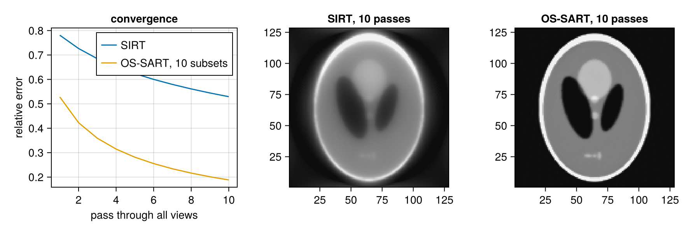

Ordered subsets and normalisation
Algebraic methods such as SIRT and SART, and the ordered-subset variants of statistical methods, normalise each update by the sums of the rows and columns of the system matrix, and many of them cycle through subsets of the views. This guide shows the two building blocks, rowsums/colsums and subset, with an OS-SART reconstruction of a 2D phantom.
using CTOperators, ImagePhantoms, CairoMakie, LinearAlgebra
using ImageGeoms: axisA 2D Shepp-Logan phantom of 128² pixels and 180 parallel-beam views:
n = 128
image = ImageGeom(; dims=(n, n), deltas=(1.0, 1.0))
x_true = Float32.(phantom(axis(image, 1), axis(image, 2), shepp_logan(SheppLoganToft(); fovs=(n, n)), 2))
geometry = parallel_beam(; angles=range(0, pi, 181)[1:180], nu=2n, nv=1, du=0.5)
op = JosephProjector(image, geometry)
y = op * x_true;Row and column sums
rowsums(op) is op * ones: for a projector the length of every ray inside the image. colsums(op) is adjoint(op) * ones: for every voxel the summed weights of all rays, its sensitivity. Both have the shape of the data and of the image, respectively, and live on the device of the projector.
r = rowsums(op)
c = colsums(op)
size(r), size(c)((256, 1, 180), (128, 128))Subsets
subset(op, views) is the projector of some of the views, sharing the image geometry. Ordered-subset methods interleave the views so that consecutive subsets see the object from different directions:
nsubsets = 10
views = [s:nsubsets:nviews(geometry) for s in 1:nsubsets]
ops = [subset(op, v) for v in views]
ys = [y[:, :, v] for v in views];Create the subset projectors and their normalisations once; they are reused in every iteration.
rs = [max.(rowsums(o), 1.0f-6) for o in ops]
cs = [max.(colsums(o), 1.0f-6) for o in ops];OS-SART
One SART update per subset: back project the normalised residual of the subset and divide by the sensitivity of the subset; then clip negative values. With one subset this is SIRT.
function os_sart(ops, ys, rs, cs, iterations; relaxation=1.0f0)
x = zeros(Float32, imagesize(ops[1]))
errors = Float64[]
for _ in 1:iterations
for (o, yk, rk, ck) in zip(ops, ys, rs, cs)
x .+= relaxation .* (adjoint(o) * ((yk .- o * x) ./ rk)) ./ ck
x .= max.(x, 0)
end
push!(errors, norm(x - x_true) / norm(x_true))
end
x, errors
end
x_os, err_os = os_sart(ops, ys, rs, cs, 10)
x_sirt, err_sirt = os_sart([op], [y], [max.(r, 1.0f-6)], [max.(c, 1.0f-6)], 10);Ten subsets reach in a few passes through the data what SIRT reaches only after many more:
fig = Figure(size=(900, 300))
ax = Axis(fig[1, 1]; xlabel="pass through all views", ylabel="relative error", title="convergence")
lines!(ax, err_sirt; label="SIRT")
lines!(ax, err_os; label="OS-SART, 10 subsets")
axislegend(ax)
for (j, (name, img)) in enumerate((("SIRT", x_sirt), ("OS-SART", x_os)))
heatmap(fig[1, j+1], img; colormap=:grays, colorrange=(0, 0.4),
axis=(; title="$name, 10 passes", aspect=DataAspect()))
end
The same pattern serves other ordered-subset methods, for example OS-EM for emission data, which divides by colsums of the subset as well.
This page was generated using Literate.jl.